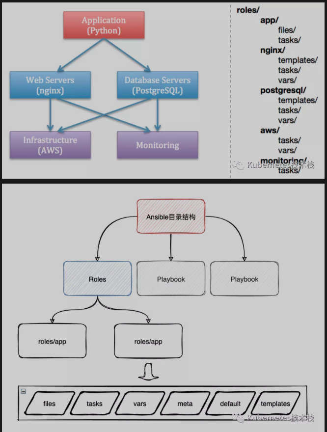

L12 任务中心之Ansible进阶篇
1、ansible-playbook
playbook & yml 说明
- playbook 由一个或多个 play 组成.
- playbook 中 每个play 必须包含 hosts 和 tasks.
- playbook 以 yaml 语法编写.
- 可读性强
- 脚本语言交互性能力强
- 使用实现语言的数据类型
- 一致性的信息模型
- 易于实现
- 基于流模式处理
- 表达能力好, 扩展性强
- YAML 约定以
---开头 和 开始不同的play. - YAML 以
#作为注释. - YAML 必须统一缩进, 空格 与
tab不能混用, 缩进的级别也必须相同, 同级缩进代表同样的级别. - YAML 文件内容 是大小写敏感的, 跟
Linux一样区分大小写. - YAML
key/value形式可写在同一行也可以换行写. 同行使用 : 隔开. - YAML 一个完整的代码块功能最少包含2个元素. 如
name: task - YAML 一个 name 下只能包含一个 task
- YAML - 开头的为列表,
key/value形式的为字典. - YAML 特性
2、playbook 核心元素
- hosts 远程主机列表 (
ip_addr/hostname/groupname) - tasks 任务集, 任务列表, 有两种写法。
- action: module args action 参数。
- module: args 参数 (一般使用这种)。
ignore_errors: True 当前 task 出错时仍然会向下执行。
- varniables 内置变量或自定义变量在 playbook 文件中调用。
- templates 模板，可替换模板文件中的变量并实现一些简单逻辑的文件。
- handles 与 notity 结合使用, 由特定条件触发的操作, 满足条件执行, 否则不执行。
- tags 标签 指定任务执行, 用于执行一个 playbook 中的部分代码. 主要用于测试ansible的语法与执行验证。
3、ansible-playbook命令
ansible-playbook
* -C --check Check 检查脚本运行情况, 不会在远程服务器里运行。
* --list-hosts 列出执行此任务的主机。
* --list-tasks 列出任务组的具体任务列表。
* --limit 只对主机列表中的某台主机执行。
* -v -vv -vvv 显示详细的执行DEBUG信息过程, 多个v参数等于DEBUG信息的叠加，显示更为详细
4、ansible-playbook setup
介绍: 这个模块默认会被playbooks自动调用，用于收集远程主机的相关变量信息，获取到变量信息可以被playbooks调用。针对 setup模块，我们经常使用的是 fact ，在此只对fact做详细讲解，其他的就不过多叙述了，如果想了解详细信息，可以访问官方文档获取帮助。
fact是ansible模块setup的功能，主要用于获取相关信息作为变量继承给playbook子任务调用。gather_facts:
# ansible k3s-cluster -m setup
ubuntu20-bj03 | SUCCESS => {
"ansible_facts": {
"ansible_all_ipv4_addresses": [
"10.0.16.4"
],
"ansible_all_ipv6_addresses": [
"fe80::5054:ff:fed6:42a8"
],
"ansible_apparmor": {
"status": "enabled"
},
"ansible_architecture": "x86_64",
"ansible_bios_date": "04/01/2014",
"ansible_bios_vendor": "SeaBIOS",
"ansible_bios_version": "seabios-1.9.1-qemu-project.org",
"ansible_board_asset_tag": "NA",
"ansible_board_name": "NA",
"ansible_board_serial": "NA",
"ansible_board_vendor": "NA",
"ansible_board_version": "NA",
"ansible_chassis_asset_tag": "NA",
"ansible_chassis_serial": "NA",
"ansible_chassis_vendor": "Smdbmds",
"ansible_chassis_version": "3.0",
# 多余的冗余信息就不放了，自己可以执行验证下。
# setup获得变量信息，都可以用于继承给playbook调用。
}
自定义Fact
手动设置:
ansible除了能获取到内置的fact的变量信息，还可以手动为某个主机组或者主机定制本地fact。
本地 fact默认存放宿主机的/etc/ansible/facts.d目录下，支持的文件格式为ini、json。
加载后的fact的key是ansible_local的特殊变量。
denis_test.fact
[general]
package = vsftpd
service = vsftpd
state = starte
setup_facts.yaml
---
- name: Install Remote Facts
hosts: k3s-cluster
vars:
remote_dir: /etc/ansible/facts.d
facts_file: denis_test.fact
tasks:
- name: Create Directory
file:
state: directory
recurse: yes
path: "{{ remote_dir }}"
- name: Install the new facts
copy:
src: "{{ facts_file }}"
dest: "{{ remote_dir }}"
执行测试
# ansible-playbook setup_facts.yaml
# ansible test -m setup
ubuntu20-bj03 | SUCCESS => {
"ansible_facts": {
# -----分隔符-----
"ansible_local": {
"custom": {
"general": {
"package": "vsftpd",
"service": "vsftpd",
"state": "started"
}
}
},
# -----分隔符-----
调用测试
deniss_test.yaml
- name: Install Apache and starts the service
hosts: k3s-cluster
tasks:
- name: Install Package
yum:
name: "{{ ansible_facts.ansible_local.custom.general.package }}"
state: latest
- name: Start Service
service:
name: "{{ ansible_facts.ansible_local.custom.general.service }}"
state: "{{ ansible_facts.ansible_local.custom.general.state }}"
5、ansible-playbook set_fact
使用set_fact设置新的变量
set_fact可以自定义变量通过template或者变量的方式在playbook中继承使用。- 如：假设你需要获取一个进程使用的内存的使用率，必须通过
set_fact来进行计算之后得出结果，并将其值在playbook中继承使用。
deniss_fact_demo.yaml
- name: set_fact demo
hosts: k3s-cluster
tasks:
- name: Calculate InnoDB buffer pool size
set_fact: innodb_buffer_pool_size_mb="{{ ansible_memtotal_mb / 2 |int }}"
- debug: var=innodb_buffer_pool_size_mb
执行测试
# ansible-playbook deniss_fact_demo.yaml
PLAY [set_fact demo] *****************************************************************************************************************************************************
TASK [Gathering Facts] ******************************************************************************************************************************************************
ok: [ubuntu20-bj03]
TASK [Calculate InnoDB buffer pool size] ************************************************************************************************************************************
ok: [ubuntu20-bj03]
TASK [debug] ****************************************************************************************************************************************************************
ok: [ubuntu20-bj03] => {
"innodb_buffer_pool_size_mb": "2911.2"
}
PLAY RECAP ******************************************************************************************************************************************************************
ubuntu20-bj03 : ok=3 changed=0 unreachable=0 failed=0 skipped=0 rescued=0 ignored=0
手动采集 fact
gather_facts: False
我们在运行playbook的时候，Ansible会先ssh连接被控端采集fact，如果被控制端的ssh还没有完成运行，就会导致整个playbook执行失败。
解决这个问题，可以先在配置中关闭fact采集，然后在task中通过wait_for探测被控端ssh端口是否正常监听，然后在task中在手动setup模块来采集fact
- hosts: k3s-cluster
name: test demo
gather_facts: False
tasks：
- name: wait for ssh to be running
local_action: wait_for port=22 host="{{ inventory_hostname }}" search_regex=OpenSSH
- name: gather facts
setup:
fact缓存
如果在playbook中需要继承fact，可启用fact缓存来提高效率。
fact支持缓存 json、memcached、redis
ansible.cfg中的配置说明:
json 以json格式文件作为fact缓存后端，ansible将会把采集的fact写入到宿主机的本地目录，最好是SSD硬盘。
redis 使用redis做缓存。
memcached 使用memcached做缓存。
- smart 表示默认收集 facts，但 facts 已有的情况下不会收集，即使用缓存 facts；
- implicit 表示默认收集 facts，要禁止收集，必须使用
gather_facts: False； - explicit 则表示默认不收集，要显式收集，必须使用
gather_facts: Ture。
[defaults]
gathering = smart
# 缓存时间
fact_caching_timeout = 86400
fact_caching = {jsonfile/redis/memcached}
# 指定ansible包含fact的json文件位置，如果目录不存在，会自动创建
# local
fact_caching_connection = /tmp/ansible_fact_cache
# redis
fact_caching_connection = 127.0.0.1:6379:admin
# memcached
fact_caching_connection = ['127.0.0.1:11211']
关闭fact（提高执行效率）
在配置中关闭fact，整个playbookfact变量将不会在显示，可以提高执行效率，但是有时候又需要使用 facts 中的信息，这时候可以按照上述设置 facts 的缓存，在空闲的时候收集 facts，缓存下来，在需要的时候直接读取缓存进行引用。
# playbook 配置
- hosts: k3s-cluster
gather_facts: no
# ansible.cfg 配置
[defaults]
gathering = explicit
6、ansible-playbook 变量
变量名要求: 只允许使用 字母 、数字 、 _ 组成, 而且只能以 字母 开头。
内置的公共变量:
ansible k3s-cluster -m setup -a 'filter=*addresses*'可使用filter参数进行过滤- 使用
ansible k3s-cluster -m setup可以获取到主机的系统变量名称
通过文件自定义变量:
- 对主机组中的主机单独定义变量, 优先级高于公共变量。
- 对主机组中的所有主机定义统一变量, 优先级低于对单独主机定义的变量。
/etc/ansible/hosts文件中定义
[appserver]
# 定义变量 node_id
10.0.8.2 node_id=17
# 对主机组 定义统一变量 domain_name
[k3s-cluster:vars]
domain_name=deniss.wang
使用变量灵活配置不同主机的 hostname
---
- hosts: k3s-cluster
become: yes
become_user: root
tasks:
- name: set hostname
hostname: name={{ node_id }}.{{ domain_name }}
通过命令行定义变量: 通过命令行定义的变量优先级是最高的
ansible-playbook -e varname=valur
在 playbook 文件里 定义变量.
- 通过
{{ 变量名 }}使用变量，另外需要注意的是，如果有中文，需要使用""把变量括起来。 - 通过
vars:列表 定义多个 变量.
---
- hosts: k3s-cluster
remote_user: root
# 定义变量
vars:
- pkg_name: httpd
- env_name: prod
tasks:
- name: {{ env_name }} install {{ pkg_name }}
yum: name={{ pkg_name }}
通过定义单独的变量文件 用于统一存放变量, 可避免变量的重复定义。
- 定义单独的 变量文件, 只需要将所有变量以
key: value形式写入到yaml文件中既可。 - 在
playbook文件中, 只需要使用vars_files:指定 yaml 文件路径既可。
vars.yaml 变量文件
---
pkg_name: httpd
file_name: deniss.wang
install.yaml
---
- hosts: k3s-cluster
remote_user: root
# 配置模板文件
vars_files:
# 指定文件的路径
- vars.yaml
tasks:
- name: install {{ pkg_name }}
yum: name={{ pkg_name }}
- name: create {{ file_name }} file
file: name=/tmp/{{ file_name }}.txt state=touch
执行 playbook 操作
# ansible-playbook install.yaml
PLAY [k3s-cluster] *******************************************************************************************************
TASK [Gathering Facts] *******************************************************************************************
ok: [10.0.8.2]
TASK [install httpd] *********************************************************************************************
changed: [10.0.8.2]
TASK [create deniss.wang file] **************************************************************************************
changed: [10.0.8.2]
PLAY RECAP *******************************************************************************************************
10.0.8.2 : ok=3 changed=2 unreachable=0 failed=0 skipped=0 rescued=0 ignored=0
7 ansible-playbook template
template 是ansible-playbook一个模块，用于存放生成配置的模板，使用jinja2语言编写，后缀为xx.j2，只能用于 playbook。
templates文件, 可嵌套引用脚本。
- 字符串: 使用单引号或双引号.
- 数字: 整数, 浮点数.
- 列表: [A1, A2, …]
- 元组: (B1, B2, …)
- 字典: {key1:value1, key2:value2, …}
- 布尔值: true/false
- 算术运算:
+, -, *, /, //, %, ** - 比较操作:
==, !=, >, >=, <, <= - 逻辑运算:
and, or, not - 流表达式:
for, if, when - Jinja2 语法：
templates 根据模板块文件动态生成对应的配置文件
- templates的模板文件必须存放于
templates目录下, 并且以.j2为后缀。 - templates 目录需要与
playbook的yaml文件在同级目录中。
# tree nginx/
|-- nginx.yaml
|-- templates
|-- nginx.conf.j2
算术运算
nginx.conf.j2
user nginx;
# 这里使用 环境变量 vcpus * 2，会根据操作系统CPU自动生成。
worker_processes {{ ansible_processor_vcpus * 2 }};
error_log /var/log/nginx/error.log;
pid /run/nginx.pid;
include /usr/share/nginx/modules/*.conf;
events {
worker_connections 10240;
}
http {
log_format main '$remote_addr - $remote_user [$time_local] "$request" '
'$status $body_bytes_sent "$http_referer" '
'"$http_user_agent" "$http_x_forwarded_for"';
access_log /var/log/nginx/access.log main;
sendfile on;
tcp_nopush on;
tcp_nodelay on;
keepalive_timeout 65;
types_hash_max_size 2048;
include /etc/nginx/mime.types;
default_type application/octet-stream;
include /etc/nginx/conf.d/*.conf;
server {
listen 80 default_server;
listen [::]:80 default_server;
server_name _;
root /usr/share/nginx/html;
# Load configuration files for the default server block.
include /etc/nginx/default.d/*.conf;
location / {
}
error_page 404 /404.html;
location = /40x.html {
}
error_page 500 502 503 504 /50x.html;
location = /50x.html {
}
}
}
nginx.yaml
---
- hosts: k3s-cluster
become: yes
become_user: root
tasks:
- name: install nginx
yum: name=nginx
- name: nginx template conf
# 如果yaml与templates在同一目录, src直接写.j2文件
template: src=nginx.conf.j2 dest=/etc/nginx/nginx.conf
notify:
- restart nginx
- name: start nginx
service: name=nginx state=started enabled=yes
handlers:
- name: restart nginx
service: name=nginx state=restarted
when 条件语句
when 条件语句 例子
# tree nginx
|-- nginx.yaml
|-- templates
|-- nginx.conf.centos7.j2
|-- nginx.conf.centos8.j2
playbook 文件
---
- hosts: k3s-cluster
become: yes
become_user: root
tasks:
- name: install nginx
yum: name=nginx
- name: template centos 7 conf
# 如果 yaml 与 templates 在同一目录, src 直接写.j2 文件。
template: src=nginx.conf.centos7.j2 dest=/etc/nginx/nginx.conf
# 使用 when 语句进行判断 如果变量为 "7" 执行以下操作
when: ansible_distribution_major_version == "7"
notify:
- restart nginx
- name: template centos 8 conf
# 同上
template: src=nginx.conf.centos8.j2 dest=/etc/nginx/nginx.conf
# 使用 when 语句进行判断 如果变量为 'Ubuntu' 且版本为20 执行以下操作
when: (ansible_distribution == "Ubuntu" and ansible_distribution_major_version == "20"
notify:
- restart nginx
- name: start nginx
service: name=nginx state=started enabled=yes
handlers:
- name: restart nginx
service: name=nginx state=restarted
执行 playbook 文件
skipping 状态表示跳过执行这个 TASK。
# ansible-playbook nginx.yml
PLAY [k3s-cluster] *******************************************************************************************
TASK [Gathering Facts] *******************************************************************************
ok: [10.0.8.2]
TASK [install nginx] *********************************************************************************
ok: [10.0.8.2]
TASK [template centos 7 conf] ************************************************************************
changed: [10.0.8.2]
TASK [template centos 8 conf] ************************************************************************
skipping: [10.0.8.2]
TASK [start nginx] ***********************************************************************************
ok: [10.0.8.2]
RUNNING HANDLER [restart nginx] **********************************************************************
changed: [10.0.3.13]
PLAY RECAP *******************************************************************************************
10.0.8.2 : ok=5 changed=2 unreachable=0 failed=0 skipped=1 rescued=0 ignored=0
迭代变量 with_tiems
- 迭代
with_items执行重复任务。 - 对于迭代选项, 固定变量名为 item 。
- 在 task 中使用
with_items指定需要迭代的元素列表。
---
- hosts: k3s-cluster
become: yes
become_user: root
tasks:
- name: create multi files
# {{ item }} 为内置特殊变量, 代表 with_items 列表中的内容
file: name=/tmp/{{ item }} state=touch
with_items:
- file_one
- file_two
- file_three
- file_four
- name: install multi software
yum: name={{ item }}
with_items:
- vsftpd
- net-tools
- iftop
代嵌套子变量 (字典)
- 迭代嵌套子变量.
- 对迭代中的变量进行嵌套关联的操作.
playbook 文件
---
- hosts: k3s-cluster
become: yes
become_user: root
tasks:
- name: create some files
# {{ item }} 为特殊变量, 代表 with_itmes 列表中的内容
file: name=/tmp/{{ item }} state=touch
with_items:
- file_one
- file_two
- file_three
- file_four
- name: create multi group
group: name={{ item }}
with_items:
- jinja2_file1
- jinja2_file2
- jinja2_file3
- jinja2_file4
- name: create multi user
# 使用 item.key值 进行引用
user: name={{ item.name }} group={{ item.group }}
# 使用 字典 定义 嵌套的子 变量
with_items:
- { name: 'file_one', group: 'jinja2_file1' }
- { name: 'file_two', group: 'jinja2_file2' }
- { name: 'file_three', group: 'jinja2_file3' }
- { name: 'file_four', group: 'jinja2_file4' }
- name: permission multi files
file: name=/tmp/{{ item.name }} owner={{ item.name }} group={{ item.group }}
with_items:
- { file: 'file_one', name: 'file_one', group: 'jinja2_file1' }
- { file: 'file_two', name: 'file_two', group: 'jinja2_file2' }
- { file: 'file_three', name: 'file_three', group: 'jinja2_file3' }
- { file: 'file_four', name: 'file_four', group: 'jinja2_file4' }
执行 playbook 文件
ansible-playbook file.yml
PLAY [k3s-cluster] *****************************************************************************************
TASK [Gathering Facts] *****************************************************************************
ok: [10.0.8.2]
TASK [create multi files] ***************************************************************************
changed: [10.0.8.2] => (item=file_one)
changed: [10.0.8.2] => (item=file_two)
changed: [10.0.8.2] => (item=file_three)
changed: [10.0.8.2] => (item=file_four)
TASK [create multi group] ***************************************************************************
changed: [10.0.8.2] => (item=jinja2_file1)
changed: [10.0.8.2] => (item=jinja2_file2)
changed: [10.0.8.2] => (item=jinja2_file3)
changed: [10.0.8.2] => (item=jinja2_file4)
TASK [create multi user] ****************************************************************************
changed: [10.0.8.2] => (item={u'group': u'jinja2_file1', u'name': u'file_one'})
changed: [10.0.8.2] => (item={u'group': u'jinja2_file2', u'name': u'file_two'})
changed: [10.0.8.2] => (item={u'group': u'jinja2_file3', u'name': u'file_three'})
changed: [10.0.8.2] => (item={u'group': u'jinja2_file4', u'name': u'file_four'})
TASK [permission multi files] ***********************************************************************
changed: [10.0.8.2] => (item={u'group': u'jinja2_file1', u'name': u'file_one', u'file': u'file1'})
changed: [10.0.8.2] => (item={u'group': u'jinja2_file2', u'name': u'file_two', u'file': u'file2'})
changed: [10.0.8.2] => (item={u'group': u'jinja2_file3', u'name': u'file_three', u'file': u'file3'})
changed: [10.0.8.2] => (item={u'group': u'jinja2_file4', u'name': u'file_four', u'file': u'file4'})
PLAY RECAP *****************************************************************************************
10.0.8.2 : ok=5 changed=4 unreachable=0 failed=0 skipped=0 rescued=0 ignored=0
流程控制、循环 for 与 if
for 循环
{% for 语句块 %} ... {% endfor %}
---
- hosts: k3s-cluster
become: yes
become_user: root
vars:
# 列表
listen_port:
- 80
- 81
- 82
# 字典
service:
- name: web1
domain: deniss.wang
port: 9090
user: nginx
path: /var/www/html
- name: web2
domain: deniss.wang
port: 9091
user: nginx
path: /var/www/html
- name: web3
domain: deniss.wang
port: 9092
user: nginx
path: /var/www/html
tasks:
- name: copy template conf
template: src=for.conf.j2 dest=/tmp/for.conf
for.conf.j2 文件
{% for port in listen_port %}语句listen_port 为 playbook中定义的 vars 。
{% for port in listen_port %}
server {
listen {{ port }}
}
{% endfor %}
查看生成 for.conf 文件
# cat /root/for.conf
server {
listen 80
}
server {
listen 81
}
server {
listen 82
}
字典形式
nginx.yaml
---
- hosts: k3s-cluster
become: yes
become_user: root
vars:
# 字典的形式
service:
- name: web1
domain: deniss.wang
port: 9090
user: nginx
path: /var/www/html
- name: web2
domain: deniss.wang
port: 9091
user: nginx
path: /var/www/html
- name: web3
domain: deniss.wang
port: 9092
user: nginx
path: /var/www/html
tasks:
- name: copy template conf
template: src=nginx.conf.j2 dest=/tmp/nginx.conf
nginx.conf.j2 文件，放在templates下面
{% for s in service %}
user {{ s.user }};
worker_processes {{ ansible_processor_vcpus * 2 }};
pid /run/nginx.pid;
server {
listen {{ s.port }} default_server;
listen [::]:{{ s.port }} default_server;
server_name {{ s.name }}.{{ s.domain }};
root {{ s.path }};
}
{% endfor %}
if 流程控制: {% if 语句块 %} ... {% else %} ... {% endif %}
playbook 文件
其中 web1, web2 不传 user 变量，web3 传 user 变量。
---
- hosts: k3s-cluster
become: yes
become_user: root
vars:
# 字典
service:
- name: web1
domain: deniss.wang
port: 90
path: /var/www/html
- name: web2
domain: deniss.wang
port: 91
path: /var/www/html
- name: web3
domain: deniss.wang
port: 92
user: nginx
path: /var/www/html
tasks:
- name: copy template conf
template: src=nginx2.conf.j2 dest=/tmp/nginx2.conf
nginx2.conf.j2 文件
{% if s.user is defined %}判断 是否有 s.user 这个变量
{% for s in service %}
{% if s.user is defined %}
user {{ s.user }};
{% else %}
user root;
{% endif %}
worker_processes {{ ansible_processor_vcpus * 2 }};
pid /run/nginx.pid;
server {
listen {{ s.port }} default_server;
server_name {{ s.name }}.{{ s.domain }};
root {{ s.path }};
}
{% endfor %}
查看生成后的 nginx2.conf
- 第一个server 不包含
s.user变量 所以user root; - 第二个server 不包含
s.user变量 所以user root; - 第三个server 包含
s.user变量 所以user nginx; 等于变量值
# cat nginx2.conf
user root;
worker_processes 4;
pid /run/nginx.pid;
server {
listen 90 default_server;
server_name web1.deniss.wang;
root /var/www/html;
}
user root;
worker_processes 4;
pid /run/nginx.pid;
server {
listen 91 default_server;
server_name web2.deniss.wang;
root /var/www/html;
}
user nginx;
worker_processes 4;
pid /run/nginx.pid;
server {
listen 92 default_server;
server_name web3.deniss.wang;
root /var/www/html;
}
tasks 示范
定义一组执行任务，可以包含多个模块的集合。
Demo
---
# 指定主机组
- hosts: k3s-cluster
# 开启提权，指定用户
become: yes
become_user: root
# 任务
tasks:
# 任务的名称
- name: ping server
ping:
- name: echo hostname
# shell 为模块名, 后面等同于 -a '' 参数
shell: hostname
- name: touch file
file: name=/tmp/file.txt state=touch
- name: echo file
shell: ls -l /tmp/file.txt
- name: write file
shell: echo "hello world" > /tmp/file.txt
- name: copy module write file
copy: content="hello deniss\n" dest=/tmp/deniss.txt
- name: display file content
shell: cat /tmp/file.txt
register: display_content1
- name: show
debug: var=display_content1.stdout verbosity=0
- name: display copy module file content
shell: cat /tmp/deniss.txt
register: display_content2
- name: show
debug: var=display_content2.stdout verbosity=0
# ansible-playbook hello.yaml
PLAY [k3s-cluster] *******************************************************************************************************************************************************************
TASK [Gathering Facts] ***************************************************************************************************************************************************************
ok: [ubuntu20-bj03]
TASK [ping server] *******************************************************************************************************************************************************************
ok: [ubuntu20-bj03]
TASK [echo hostname] *****************************************************************************************************************************************************************
changed: [ubuntu20-bj03]
TASK [touch file] ********************************************************************************************************************************************************************
changed: [ubuntu20-bj03]
TASK [echo file] *********************************************************************************************************************************************************************
changed: [ubuntu20-bj03]
TASK [write file] ********************************************************************************************************************************************************************
changed: [ubuntu20-bj03]
TASK [copy module write file] ********************************************************************************************************************************************************
ok: [ubuntu20-bj03]
TASK [display file content] **********************************************************************************************************************************************************
changed: [ubuntu20-bj03]
TASK [show] **************************************************************************************************************************************************************************
ok: [ubuntu20-bj03] => {
"display_content1.stdout": "hello world"
}
TASK [display copy module file content] **********************************************************************************************************************************************
changed: [ubuntu20-bj03]
TASK [show] **************************************************************************************************************************************************************************
ok: [ubuntu20-bj03] => {
"display_content2.stdout": "hello deniss"
}
PLAY RECAP ***************************************************************************************************************************************************************************
ubuntu20-bj03 : ok=11 changed=6 unreachable=0 failed=0 skipped=0 rescued=0 ignored=0
状态释义:
ok: ok 未修改文件元数据，绿色changed: 数据有修改，黄色
8 handles 示范
handles 与 notity 结合的例子
同一个name 下可以定义多个 notify 配置关联到不同的 handlers 中。
---
# 指定主机组
- hosts: k3s-cluster
# 开启提权，指定用户
become: yes
become_user: root
tasks:
- name: copy httpd.conf
copy: src=~/ansible/httpd.conf dest=/etc/httpd/conf/httpd.conf backup=yes
# 关联多个触发器的写法
notify:
- restart httpd
- check status httpd
- check network port
Demo
Centos
---
# 指定主机组
- hosts: k3s-cluster
# 开启提权，指定用户
become: yes
become_user: root
tasks:
- name: install httpd
yum: name=httpd
- name: copy httpd.conf
copy: src=/opt/ansible/conf/httpd.conf dest=/etc/httpd/conf/httpd.conf backup=yes
# 此任务 如果有变动会触发如下定义名称的触发器
notify: restart httpd
- name: start httpd
service: name=httpd state=started enabled=yes
# 触发器, 需要配置 notify 触发
handlers:
- name: restart httpd
service: name=httpd state=restarted
Ubuntu
---
# 指定主机组
- hosts: k3s-cluster
# 开启提权，指定用户
become: yes
become_user: root
tasks:
- name: Update apt-get repo and cache
apt: update_cache=yes force_apt_get=yes cache_valid_time=3600
- name: Install Vsftpd
apt:
name: vsftpd
- name: copy vsftpd.conf
copy: src=/opt/ansible/conf/vsftpd.conf dest=/etc/vsftpd.conf backup=yes
notify: restart vsftpd
- name: start vsftpd
service: name=vsftpd state=started enabled=yes
# 配置 notify 触发，修改配置文件的时候生效。
handlers:
- name: restart vsftpd
service: name=vsftpd state=restarted
执行安装vsftpd PlayBook
# ansible-playbook install_vsftpd.yaml
PLAY [k3s-cluster] *******************************************************************************************************************************************************************
TASK [Gathering Facts] ***************************************************************************************************************************************************************
ok: [ubuntu20-bj03]
TASK [Update apt-get repo and cache] *************************************************************************************************************************************************
ok: [ubuntu20-bj03]
TASK [Install Vsftpd] ****************************************************************************************************************************************************************
ok: [ubuntu20-bj03]
TASK [copy vsftpd.conf] **************************************************************************************************************************************************************
ok: [ubuntu20-bj03]
TASK [start vsftpd] ******************************************************************************************************************************************************************
ok: [ubuntu20-bj03]
PLAY RECAP ***************************************************************************************************************************************************************************
ubuntu20-bj03 : ok=5 changed=0 unreachable=0 failed=0 skipped=0 rescued=0 ignored=0
修改vsftpd文件以后会触发重启操作。
# ansible-playbook install_pkg.yaml
PLAY [k3s-cluster] *******************************************************************************************************************************************************************
TASK [Gathering Facts] ***************************************************************************************************************************************************************
ok: [ubuntu20-bj03]
TASK [Update apt-get repo and cache] *************************************************************************************************************************************************
ok: [ubuntu20-bj03]
TASK [Install Vsftpd] ****************************************************************************************************************************************************************
ok: [ubuntu20-bj03]
TASK [copy vsftpd.conf] **************************************************************************************************************************************************************
changed: [ubuntu20-bj03]
TASK [start vsftpd] ******************************************************************************************************************************************************************
ok: [ubuntu20-bj03]
RUNNING HANDLER [restart vsftpd] *****************************************************************************************************************************************************
changed: [ubuntu20-bj03]
PLAY RECAP ***************************************************************************************************************************************************************************
ubuntu20-bj03 : ok=6 changed=2 unreachable=0 failed=0 skipped=0 rescued=0 ignored=0
修改vsftpd文件以后会触发重启操作。
# ansible-playbook install_pkg.yaml
PLAY [k3s-cluster] *******************************************************************************************************************************************************************
TASK [Gathering Facts] ***************************************************************************************************************************************************************
ok: [ubuntu20-bj03]
TASK [Update apt-get repo and cache] *************************************************************************************************************************************************
ok: [ubuntu20-bj03]
TASK [Install Vsftpd] ****************************************************************************************************************************************************************
ok: [ubuntu20-bj03]
TASK [copy vsftpd.conf] **************************************************************************************************************************************************************
changed: [ubuntu20-bj03]
TASK [start vsftpd] ******************************************************************************************************************************************************************
ok: [ubuntu20-bj03]
RUNNING HANDLER [restart vsftpd] *****************************************************************************************************************************************************
changed: [ubuntu20-bj03]
PLAY RECAP ***************************************************************************************************************************************************************************
ubuntu20-bj03 : ok=6 changed=2 unreachable=0 failed=0 skipped=0 rescued=0 ignored=0
9 Tags示范
9-1 tags
- 定义了 tags 后可通过定义的 tags 单独运行该 tags来执行指定的tasks， 运行多个可用 , 号分隔。
- 多个不同的任务中可以定义相同的 tags。
---
# 指定主机组
- hosts: k3s-cluster
# 开启提权，指定用户
become: yes
become_user: root
tasks:
- name: Update apt-get repo and cache
apt: update_cache=yes force_apt_get=yes cache_valid_time=3600
- name: Install Vsftpd
apt:
name: vsftpd
- name: copy vsftpd.conf
copy: src=conf/vsftpd.conf dest=/etc/vsftpd.conf backup=yes
notify: restart vsftpd
# 定义标签
tags: cpconf
- name: start vsftpd
service: name=vsftpd state=started enabled=yes
# 定义标签
tags: upvsftpd
# 配置 notify 触发，修改配置文件的时候生效。
handlers:
- name: restart vsftpd
service: name=vsftpd state=restarted
-t 指定标签执行
# ansible-playbook -t upvsftpd install_vsftpd.yaml
PLAY [k3s-cluster] *******************************************************************************************************************************************************************
TASK [Gathering Facts] ***************************************************************************************************************************************************************
ok: [ubuntu20-bj03]
TASK [start vsftpd] ******************************************************************************************************************************************************************
ok: [ubuntu20-bj03]
PLAY RECAP ***************************************************************************************************************************************************************************
ubuntu20-bj03 : ok=2 changed=0 unreachable=0 failed=0 skipped=0 rescued=0 ignored=0
# ansible-playbook -t cpconf install_vsftpd.yaml
PLAY [k3s-cluster] *******************************************************************************************************************************************************************
TASK [Gathering Facts] ***************************************************************************************************************************************************************
ok: [ubuntu20-bj03]
TASK [copy vsftpd.conf] **************************************************************************************************************************************************************
changed: [ubuntu20-bj03]
RUNNING HANDLER [restart vsftpd] *****************************************************************************************************************************************************
changed: [ubuntu20-bj03]
PLAY RECAP ***************************************************************************************************************************************************************************
ubuntu20-bj03 : ok=3 changed=2 unreachable=0 failed=0 skipped=0 rescued=0 ignored=0
10 ansible-vault
- playbook 文件加密工具。
ansible-vault encrypt hello.yamlencrypt: AES256加密 ( 会提示输入密码 )。view: 加密的情况下 查看 原来的内容。edit: 编辑加密的 playbook 文件。decrypt: 解密。rekey: 修改加密密码。
11 ansible-console
ansible-console: 可交互执行命令, 支持 Tab 键。
# ansible-consoleWelcome to the ansible console.Type help or ? to list commands.deniss.wang@all (10)[f:5]$
root@all (10) [f:5]$
root当前执行用户。all表示当前主机列表。(10)表示当前主机清单下包含 10 台主机。[f:5]: 表示并发执行任务数为 5 个。。
12 ansible Roles
- Roles 角色是 Ansible v1.2 版本新加入特性，用于层次性、结构化的组织 playbook。
- Roles 能够根据层次结构自动加载- 变量文件、tasks、handler、template 文件等. 简单来讲就是将 这些文件归类到各自单独的文件目录中, 使 playbook 文件可以更好的通过 include 这些文件目录。
- Roles 一般用于基于 主机构建服务 的场景中, 但也可以用于构建 守护进程 等场景。
- Roles 默认的目录为
/etc/ansible/roles。

目录结构说明
- playbook.yml - 剧本文件
- app 具体的角色项目名称, 比如 Nginx、PHP、Apache
- files 用于存放由copy 或script 模块调用的文件
templates用于存放 Jinja2 模板, template 模块会自动在此目录中寻找 Jinja2 模板文件tasksmain.yml文件为入口, 用于定义此角色的任务列表, 此文件可以使用include包含其它的位于此目录的 task 文件handlersmain.yml文件为入口, 用于定义此角色中触发条件时执行的动作varsmain.yml文件为入口，用于定义此角色用到的变量defaultsmain.yml文件为入口， 用于为当前角色设定默认变量metamain.yml文件为入口，用于定义此角色的特殊设定及其依赖关系-
roles:所有的角色必须放在roles目录下, 这个目录可以自定义位置，默认的位置在/etc/ansible/roles -
nginx roles
# tree .
|-- nginx
|-- defaults
|-- files
|-- handlers
|-- meta
|-- tasks
|-- templates
|-- vars
- 创建对应的文件
# tree roles/
roles/
|-- nginx
|-- defaults
|-- files
|-- handlers
|-- meta
|-- tasks
| |-- group.yaml
| |-- main.yaml
| |-- restart.yaml
| |-- start.yaml
| |-- template.yaml
| |-- user.yaml
| |-- yum.yaml
|-- templates
| |-- nginx.conf.j2
|-- vars
/etc/ansible/nginx_roles.yml 与 roles存放位置在同一目录。
---
- hosts: k3s-cluster
become: yes
become_user: root
# 选择 调用的 roles 属性
roles:
# 调用定义好的role，存放在roles目录中。
- role: nginx
/etc/ansible/roles/nginx/tasks/main.yml 入口文件 配置 task 执行顺序。
- include: roles/httpd/tasks/copyfile.yml- 跨 roles 调用 tasks，需要写 roles 目录级的全路径。
如:
- include: group.yml
- include: user.yml
- include: yum.yml
- include: template.yml
- include: start.yml
/etc/ansible/roles/nginx/tasks/group.yml 单独的 tasks 文件只写单独的内容 如下:
- name: create group
group: name=nginx gid=80
执行 nginx_roles.yml 文件
# ansible-playbook nginx_roles.yml
PLAY [k3s-cluster] ****************************************************************************************
TASK [Gathering Facts] ****************************************************************************
ok: [10.0.8.2]
TASK [nginx : create group] ***********************************************************************
changed: [10.0.8.2]
TASK [nginx : create user] ************************************************************************
changed: [10.0.8.2]
TASK [nginx : install package] ********************************************************************
changed: [10.0.8.2]
TASK [nginx : copy conf] **************************************************************************
changed: [10.0.8.2]
TASK [nginx : start service] **********************************************************************
changed: [10.0.8.2]
PLAY RECAP ****************************************************************************************
10.0.8.2 : ok=6 changed=5 unreachable=0 failed=0 skipped=0 rescued=0 ignored=0
roles tags 标签
在 playbook 文件中 对 roles 配置相应的 tags 。
- hosts: k3s-cluster
become: yes
become_user: root
# 选择 roles 属性
roles:
# 配置相应的 tags 用 { } 引用
- { role: nginx, tags: ['web', 'nginx'] }
- { role: mysql, tags: ['db', 'mysql'] }
- { role: redis, tags: ['db', 'redis'] }
- { role: golang, tags: ['web', 'golang'] }
- { role: vue, tags: ['web', 'vue'] }
- { role: app_demo, tags: "app_demo" }
跟上面的用法一样，通过 ansible-playbook -t 参数指定 tags 进行单独调用
如下指定 tags 为 web 的 role 执行，其中会依次执行nginx 、golang、vue的roles。
# ansible-playbook -t web playbook.yml
roles when 语句
对 role 进行条件的判断.
ansible_distribution_major_version == "7"
---
- hosts: all
become: yes
become_user: root
# 选择 roles 属性
roles:
# 配置相应的 tags 用 { } 引用
- { role: nginx, tags: ['web', 'nginx'] }
- { role: mysql, tags: ['db', 'mysql'] }
- { role: redis, tags: ['db', 'redis'] }
# 只针对操作系统为 Centos7 的执行
- { role: golang, tags: ['web', 'golang'], when: ansible_distribution_major_version == "7" }
# 只针对操作系统为 Ubuntu20 的执行
- { role: vue, tags: ['web', 'vue'], when: (ansible_distribution == "Ubuntu" and ansible_distribution_major_version == "20")}
- { role: app, tags: "app" }
extra-vars
--extra-vars执行 playboook 的时候以参数方式传入变量。
# 以变量方式传参
ansible-playbook deploy.yaml --extra-vars "hosts=k3s-cluster user=ubuntu"
# 以json格式传参
ansible-playbook deploy.yaml --extra-vars "{'app_name':'nginx', 'pkg_name':'vsftpd'}"
# 以json文件方式传参
ansible-playbook deploy.yml --extra-vars "@test_vars.json"
附上2个Demo
Ubuntu 安装软件，传入参数即可安装软件。
---
# 定义集群，并设置提权root，
- hosts: all
become: yes
become_user: root
vars:
# 传入参数
- DEPLOY_USER: ubuntu
- APP_NAME: '{{ app_name }}'
tasks:
- name: 更新 apt-get 仓库以及缓存
apt: update_cache=yes force_apt_get=yes cache_valid_time=3600
- name: 安装 {{ APP_NAME }} 程序
apt:
name: "{{ APP_NAME }}"
# - name: "复制 {{ APP_NAME }} 配置文件"
# copy: src=./conf/vsftpd.conf dest=/etc/{{ APP_NAME }}.conf backup=yes
# notify: restart {{ APP_NAME }} # 此处必须与handlers一致
# # 定义标签
# tags: copyconf
- name: "启动 {{ APP_NAME }} 服务"
service: name={{ APP_NAME }} state=started enabled=yes
# 定义标签
tags: startvsftpd
# 配置 notify 触发，修改配置文件的时候生效。
handlers:
- name: restart {{ APP_NAME }}
service: name={{ APP_NAME }} state=restarted
发布流程，Demo中的具体实现逻辑
---
- hosts: all
gather_facts: no
vars:
# OSS参数
- OSS_URL: 'https://repo.opendevops.cn'
- OSS_PATH: 'codo/codo-api/cclib/production'
- OSS_FILE: 'xxxxx_20211020181130_dispatch-service-0.0.7.jar'
- OSS_FILE_KEY: '?xxxxxxxxxxxxxxxxxxxxxxxxxxxxxxxxxxxxxxxx'
# 部署参数
- DEPLOY_USER: '{{ deploy_user }}' # "ubuntu"
- APP_NAME: '{{ app_name }}' # "tomcat"
- APP_DIR: '{{ app_dir }}' # "/tmp"
- DING_URL: '{{ ding_url }}'
- DING_TOKEN: '{{ ding_token }}'
tasks:
- name: "验证 {{ inventory_hostname }} SSH 端口"
local_action: wait_for port=22 host="{{ inventory_hostname }}" search_regex=OpenSSH
- name: gather facts
setup:
- name: "钉钉 {{ ding_url }} {{ ding_token }}"
shell: "echo {{ ding_url }}"
register: print_ding_url
- name: "获取当前发布主机IP"
shell: "curl http://ip.me"
register: get_ip_addr
- name: "获取当前发布主机IP SDTOUT"
debug: var=get_ip_addr.stdout
- name: "获取当前发布主机名称"
shell: "hostname"
register: get_hostname
- name: "获取当前发布主机名称 SDTOUT"
debug: var=get_hostname
# 发布的一些动作
- name: "发布主机: {{ get_hostname.stdout }} 验证 {{ APP_NAME }} 目录"
file:
path: "{{ APP_DIR }}/{{ APP_NAME }}"
state: directory
mode: '0755'
register: create_dir
- name: "发布主机: {{ get_hostname.stdout }} 验证 {{ APP_NAME }} 目录 STDOUT"
debug: var=create_dir
- name: "发布主机: {{ get_hostname.stdout }} APP {{ APP_NAME }} 程序包下载"
shell: "wget {{ OSS_URL }}/{{ OSS_PATH }}/{{ OSS_FILE }}'{{ OSS_FILE_KEY }}' -O {{ APP_DIR }}/{{ APP_NAME }}/{{ OSS_FILE }}"
args:
chdir: /opt/
creates: /opt/{{ OSS_URL }}/{{ OSS_FILE }}
register: download_file
#notify: restart {{ APP_NAME }}
- name: "发布主机: {{ get_hostname.stdout }} APP {{ APP_NAME }} 程序包下载 CMD"
debug: var=download_file.cmd
- name: "发布主机: {{ get_hostname.stdout }} APP {{ APP_NAME }} 改名"
shell: "new_file_name=`ls {{ APP_DIR }}/{{ APP_NAME }}/{{ OSS_FILE }} |awk -F'_' '{print $3}'` && echo ${new_file_name} && mv {{ APP_DIR }}/{{ APP_NAME }}/{{ OSS_FILE }} {{ APP_DIR }}/{{ APP_NAME }}/${new_file_name}"
args:
chdir: /opt/
creates: /opt/{{ OSS_URL }}/{{ OSS_FILE }}
register: move_file
- name: "发布主机: {{ get_hostname.stdout }} APP {{ APP_NAME }} 改名 STDOUT"
debug: var=move_file.stdout
- name: "发布主机: {{ get_hostname.stdout }} APP {{ APP_NAME }} 权限修改"
file:
path: "{{ APP_DIR }}/{{ APP_NAME }}"
state: directory
owner: "{{ DEPLOY_USER }}"
group: "{{ DEPLOY_USER }}"
recurse: yes
register: changed_permissions
- name: "APP {{ APP_NAME }} 权限修改 STDOUT"
debug: var=changed_permissions
- name: "发布主机: {{ get_hostname.stdout }} APP {{ APP_NAME }} 服务重启"
shell: "echo {{ OSS_URL }}/{{ OSS_PATH }}/{{ OSS_FILE }} -O {{ APP_DIR }}/{{ APP_NAME }}/{{ OSS_FILE }}"
register: restart_service
notify: restart {{ APP_NAME }}
- name: "发布主机: {{ get_hostname.stdout }} APP {{ APP_NAME }} 服务重启 SDTOUT"
debug: var=restart_service.cmd
# 发布完成后的验证
- name: "发布主机: {{ get_hostname.stdout }} 验证 {{ APP_NAME }} 进程状态"
shell: "echo {{ OSS_URL }}/{{ OSS_PATH }}/{{ OSS_FILE }} -O {{ APP_DIR }}/{{ APP_NAME }}/{{ OSS_FILE }}"
args:
chdir: /opt/
creates: /opt/{{ OSS_URL }}/{{ OSS_FILE }}
register: process_status
- name: "发布主机: {{ get_hostname.stdout }} 验证 {{ APP_NAME }} 进程状态 STDOUT"
debug: var=process_status.stdout
- name: "发布主机: {{ get_hostname.stdout }} 验证 {{ APP_NAME }} 服务状态"
shell: "echo {{ OSS_URL }}/{{ OSS_PATH }}/{{ OSS_FILE }} -O {{ APP_DIR }}/{{ APP_NAME }}/{{ OSS_FILE }}"
args:
chdir: /opt/
creates: /opt/{{ OSS_URL }}/{{ OSS_FILE }}
register: service_status
- name: "发布主机: {{ get_hostname.stdout }} 验证 {{ APP_NAME }} 服务状态 STDOUT"
debug: var=service_status.stdout
- name: "发布主机: {{ get_hostname.stdout }} 验证 {{ APP_NAME }} 接口状态"
shell: "curl -s -L %{http_code} {{ OSS_URL }} | grep \"Welcome!\" |awk '{print $1}'"
args:
chdir: /opt/
creates: /opt/{{ OSS_URL }}/{{ OSS_FILE }}
register: interface_status
- name: "发布主机: {{ get_hostname.stdout }} 验证 {{ APP_NAME }} 接口状态 STDOUT"
debug: var=interface_status.stdout
# 重启服务
handlers:
- name: restart {{ APP_NAME }}
service: name={{ APP_NAME }} state=restarted
执行参数
# 变量
ansible-playbook -C deploy.yaml -e "ding_url=ding.opendevops.cn app_name=tomcat app_dir=/tmp/deniss deploy_user=ubuntu, ding_token=qwerty&^%FDSFBSNFXZ&^%%"
# json
ansible-playbook -C deploy.yaml --extra-vars "{'app_name':'tomcat', 'deploy_user':'ubuntu', 'app_dir':'/tmp/deniss', 'ding_url':'ding.opendevops.cn', 'ding_token':'qwerty&^%FDSFBSNFXZ&^%%'}"